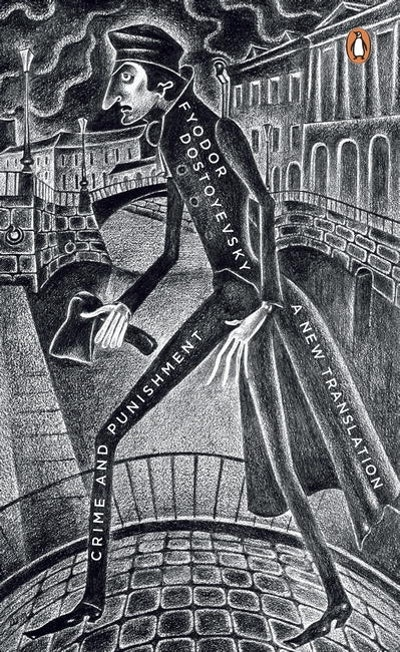
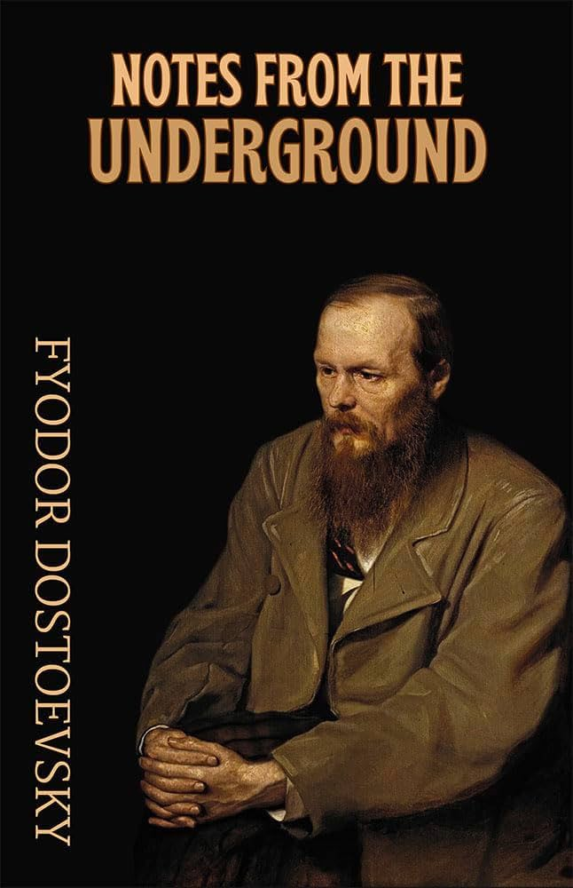

ARYAN TIWARI
Developer
Reader • Builder • Dreamer
"My God, a whole moment of happiness! Is that too little for the whole of a man's life?"
About Me
I have always been more interested in questions than answers.
Code allows me to build, while literature teaches me why.
Between the two, I spend my time exploring human nature, loneliness, ambition, hope, and the strange beauty found in ordinary lives.
This space is not only a portfolio of projects, but also a record of the books and ideas that shaped the person behind them.
A Shelf of Influences
Books that shaped how I think.

White Nights

Crime & Punishment
The Idiot

Notes from Underground
Full Library
Words That Stayed
"My God, a whole moment of happiness! Is that too little for the whole of a man's life?"
Fyodor Dostoevsky, White Nights"Pain and suffering are always inevitable for a large intelligence and a deep heart."
Fyodor Dostoevsky"I am a dreamer; I have so little real life."
Fyodor Dostoevsky, White Nights
My tears long for her ocean,
yet knowing it is no mere sea but a goddess's sacred water,
they dare not fall.
For how can something so mortal
claim a place in the divine?
Contact
Let's build something, or talk about books.